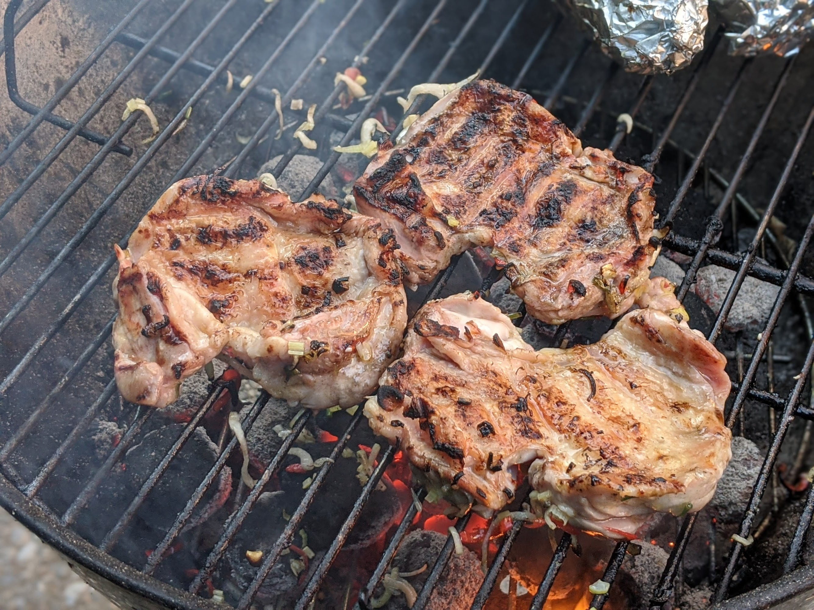

Poulet mariné à l'antillaise

Pour 4 personnes :
- 4 cuisses de poulet auxquelles on a demandé au boucher d'enlever l'os, ou deux gros blancs de poulet
- 2 citrons verts bien juteux
- 4 gousses d'ail
- 10 brins de ciboulette
- Un petit piment
- Un oignon
- Quatre cuillères à soupe d'huile d'olive
- Si on utilise des blancs de poulet, les couper en deux steaks. Faire quelques entailles dans la viande avec un couteau.
- Presser le citron, éplucher et couper l'ail et l'oignons en morceaux, laver et émincer le piment et la ciboulette. Tout mélanger avec l'huile d'olive, et mettre le poulet à mariner dans le mélange.
- Après une nuit à mariner (entre 12h et 36h), faire griller au barbecue, déguster immédiatement.
Retour à la liste des recettes